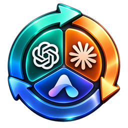
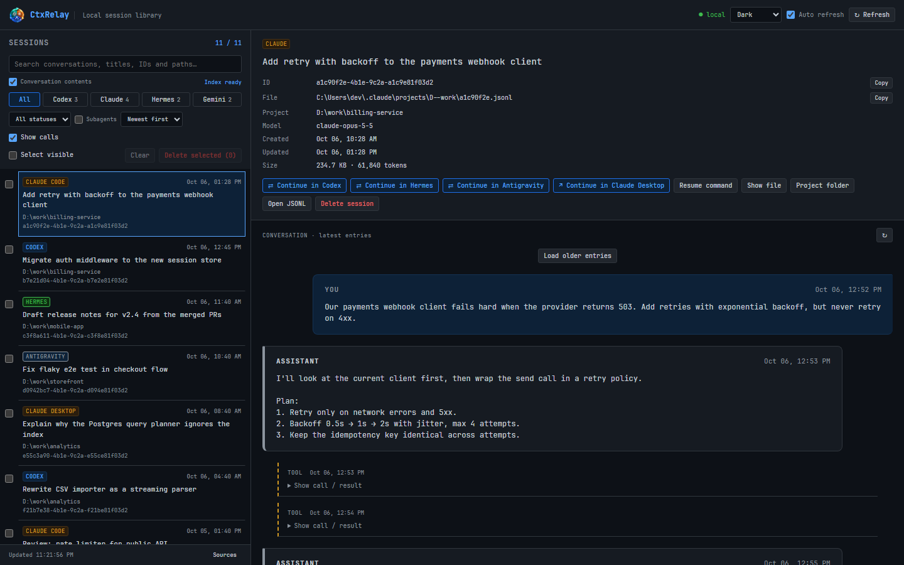
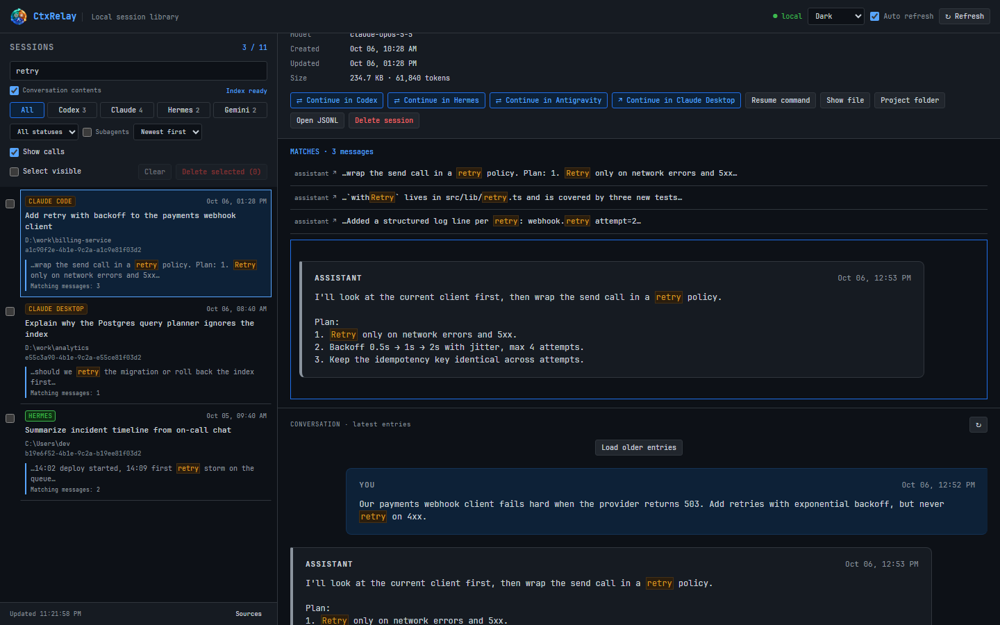
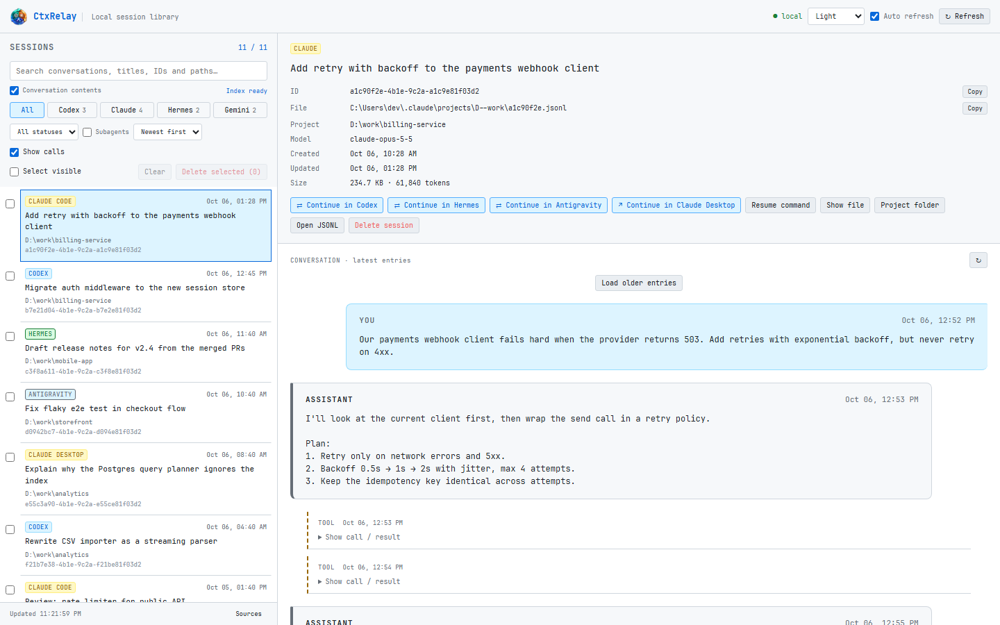
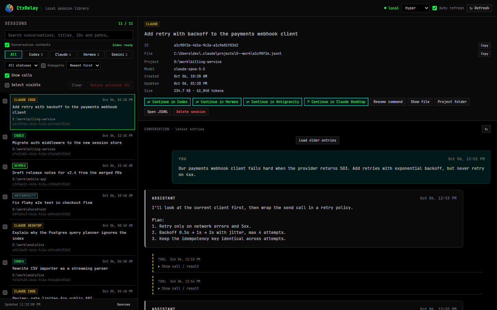
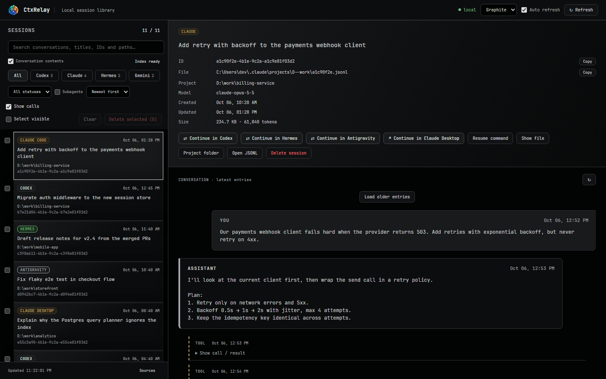

One library for all your AI coding sessions. Find any conversation from Codex, Claude, Hermes or Antigravity in seconds — and continue it in a different client without losing the context.

CtxRelay finds sessions on its own — Codex journals, Claude Code and Claude Desktop projects, Hermes databases with all profiles, Antigravity IDE and app conversations. Filter by client or status, sort, and open any conversation with tool calls shown as collapsible entries.
From the detail panel: open the session in its desktop app, copy the resume command, reveal the file or jump to the project folder.

“Where did we fix that retry bug?” Type a word — CtxRelay searches the full text of every conversation across all clients, shows matching snippets right in the list and jumps straight to the message, even if it is hundreds of entries back. The index builds in the background and survives restarts.

Click ⇄ Continue in Codex (or Claude, Hermes, Antigravity) and CtxRelay creates a new
native session in that client with the whole history — messages, tool calls and their results.
The new session shows up in the library, one click away from its app. Repeat an unchanged conversion and the existing copy is reused.
Handy when one assistant hits its usage limit mid-task, or when another one is simply better at the next step.
The tray icon is a big number: what's left of your Codex limit — the tighter of the 5-hour and weekly windows. Right-click for every saved account and your Claude limits.
Several Codex accounts? Click one to switch: CtxRelay saves the current credentials, swaps them and restarts ChatGPT. Expired tokens are renewed automatically, new accounts are picked up when you sign in.
Tick sessions and delete them in one go — each one is backed up first, so nothing is lost by accident. Pick the look you like; the interface follows your Windows language.



Start with Windows from the tray menu, or launch with --tray.